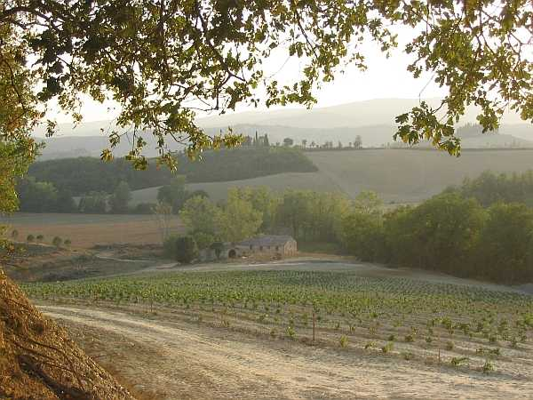
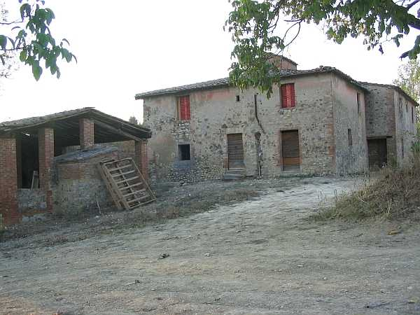

Quercegrossa (Ricordi e memorie)
CAPITOLO I - LUOGHI E PODERI
(MULINUZZO)
Cliccami per ritornare all'Indice poderi
Vai all'Indice dei Capitoli
MULINUZZO

Facile per chiunque comprendere l’origine di questo podere il cui nome ci indica che sul posto, o poco distante sul corso della Staggia, doveva sorgere un piccolo fabbricato adibito alla macinazione dei grani della fattoria del Castellare. Oggi, del vecchio mulino non vi sono resti e in quel piano alluvionale domina una grande costruzione poderale su due piani, proprietà della fattoria del Castellare.
Veduta sui piani del Mulinuzzo
Sede di una sola famiglia è stato nel passato abitato da miseri coloni che fino all’Ottocento vi dimoravano in piccoli nuclei di 3/5 componenti al massimo poi, a seguito di importanti anche se disordinati ampliamenti eseguiti negli anni, che facilmente si leggono sull’edificio, oltre alla probabile acquisizione di nuove terre coltivate, vi si trovano famiglie numerose di dieci e passa persone.
Il fabbricato, leggermente sopraelevato sul corso del fiume, conserva oggi, pur nel suo completo abbandono, le strutture di servizio tipiche di un podere e tutte addossate alla costruzione principale con la capanna affiancata dal pozzo a fronteggiare l’ingresso alla casa. Una piccola costruzione adibita a capanna o magazzino si trova distaccata e in posizione più alta rispetto alla casa. Il corpo centrale a pianta quadrata di notevole ampiezza mostra chiaramente un’aggiunta posteriore sul lato Sud, che fa blocco con l’antico, sormontata da un colombaino. L’edificio venne modificato senz’altro nell’Ottocento inoltrato come si desume dalle misure catastali che nel 1825 danno la casa colonica di 840 braccia quadre che fanno 285 metri quadri assolutamente inferiori alle attuali dimensioni. Lontano e isolato, il podere del Molinuzzo si raggiungeva dalla fattoria del Castellare da una strada campestre che permetteva il transito di carri mentre un’altra, nata molto più tardi da un primitivo viottolo, conduceva a Quercegrossa attraverso la proprietà Mori, usata per comodità essendo la via più breve per il paese.

Fin dai documenti di fine Cinquecento il Molinuzzo appare strettamente collegato alla famiglia Barbucci, con Andrea nel 1581, Antonio nel 1592 e Armenio di Antonio, proprietari anche del Castellare, per passare poi intorno al 1650 agli Amidei di Quercegrossa padroni dell’omonimo podere e dell’osteria, che estendono così le loro terre nel territorio di Monteriggioni fino alla Staggia. Il secolo successivo, nel 1720, avviene la cessione dei beni Amidei alla signora Francesca Ugolini in Arrighi e alla sua morte il Mulinuzzo viene acquistato dalle Monache della Madonna nel 1730 con tutte le sue terre "con alquanti mori". Le monache immediatamente lo rivendono ai fratelli Pavolini per scudi 850 ma subito appare proprietario il Fondi del Castellare che entra nell’affare. I Fondi lo mantengono un quarantennio per cederlo poi a Lorenzo Franchi e da questi ai Vannini. Nessuna notizia invece per il Cinquecento e ciò starebbe a significare che la nascita del podere sia avvenuta ai primi del Seicento ad opera di detti Barbucci. Ma questa è solo un’ipotesi. Con la proprietà Vannini il Molinuzzo entra definitivamente nelle competenze della fattoria del Castellare e ne seguirà sempre la sorte fino ai giorni nostri. Nato su territorio di competenza della parrocchia di Basciano, come il Castellare, ne fece parte fino al 1884 quando passò alla parrocchia di Quercegrossa. Il secolo Novecento al suo aprirsi trova al Molinuzzo il colono Sabatino Boschi, che dopo quattro anni nel 1904 sarà spoderato dai Bruttini. Questa famiglia sarà l’ultima di mezzadri ad abitarvi e lasceranno il Mulinuzzo negli anni Cinquanta. Poi il podere accolse i salariati Baldassarre, una famiglia di immigrati e i Minghi. Poi il silenzio calò sul podere e le sue terre vennero lavorate dagli operai del Castellare. I Bruttini avevano ca. quaranta ettari di terra, compreso il bosco, e si rammenta una eccezionale tribbiatura nel 1944 che diede 350 sacchi di grano, ossia 210 quintali. Tribbiavano con i Mori. Nella stalla due paia di bovi e due di vacche. Negli anni Trenta pascolavano un piccolo gregge di pecore. Una ciuca aiutava per i carichi verso la fattoria. Non avevano né luce né acqua in casa e si servivano del pozzo e di una sorgente di vena presso il fiume. Il podere confinava con numerose proprietà: con i Mori (Mecacci) a Est, lungo il borriciattolo del Dorcio con il Castello (Corbini) a Nord, poi col Vigni di Gardina e il Minghi della Cappannetta. Continuando a Ovest, col Favilli di Staggia, e lungo il fosso con la Cornacchia a Sud, e i campi di Masiero del Castellare. Nel 1644 il podere viene così descritto: "Il podere chiamato Mulinuzzo posto nello stato di Siena e comune di Quercia Grossa con terre lavorative, arborate e sodive, et anco parte boschive con querce da ingrassare maiali con casa per il padrone e lavoratore, al quale confina il Magnifico Fabio Fondi, il Sig. Amidei, il fiume della Staggia, Stefano Richetti, et il Botro chiamato di Val di Spogna, et in oltre beni di esso ms. Francesco Barbucci cioè del podere della casa overo della Cornacchia, et altri". Un elenco degli antichi coloni che vi hanno abitato è quasi impossibile stilarlo dato il loro alto numero, e che il Molinuzzo sia stato un podere difficile nei secoli precedenti lo dimostra la breve permanenza di tutte le famiglie ad esclusione di Pellegrino Carnesecchi che vi resse per circa 15 anni dal 1830. Famiglie tutte formate da modesti nuclei di 4/6 persone. I più antichi abitatori Enea di Betto e Andrea Muzzini o Mazzini nel primi due decenni del Seicento.
Il Mulinuzzo visto dal piano della Staggia.
Veduta del podere da ovest.
La vecchia porta d'ingresso alla casa dei coloni Bruttini.
Capitolo successivo Olmicino
Inizio pagina
Vai all'Indice dei Capitoli
|